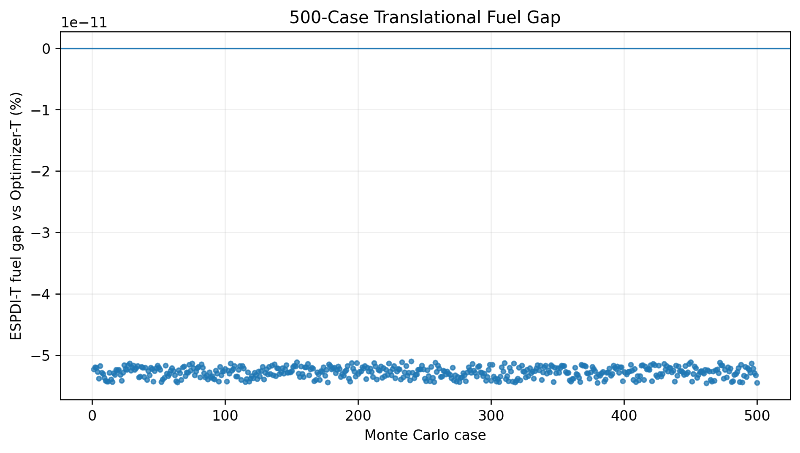
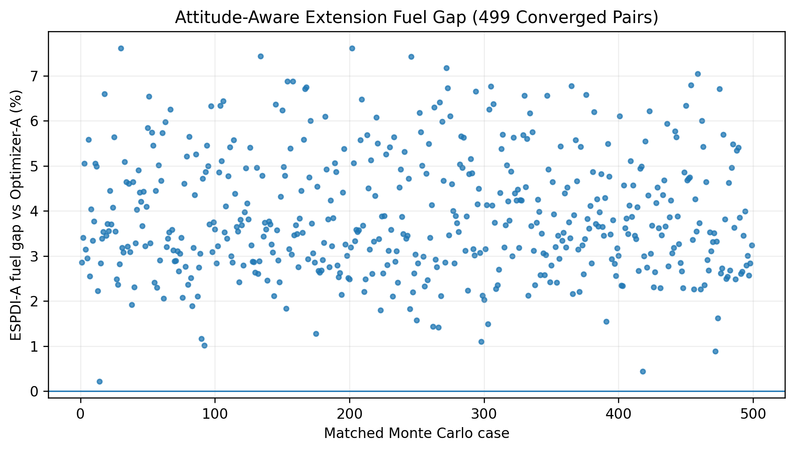
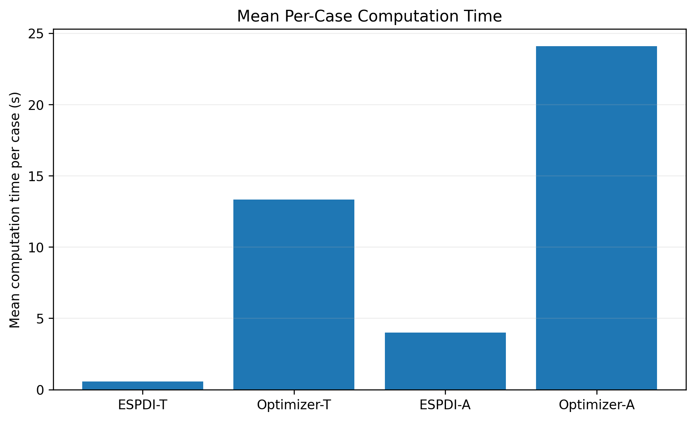
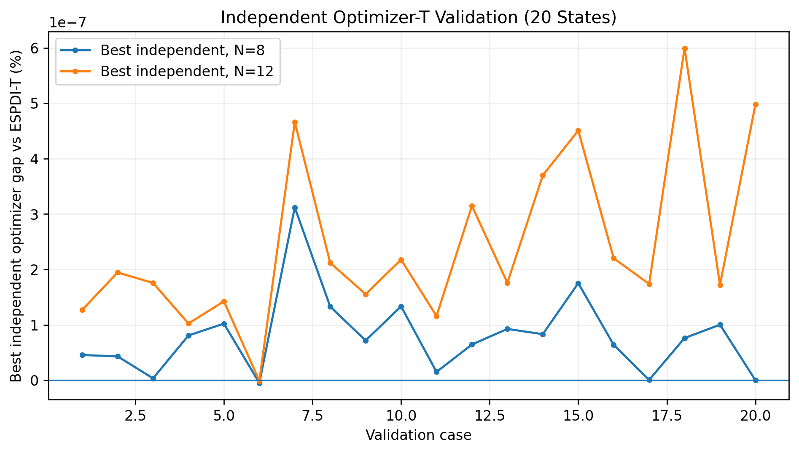

Variable mass
The maximum-thrust burn produces a constant propellant mass-flow rate.
\[ \dot m_p = \frac{T_{\max}}{I_{sp}g_0}, \qquad m(t)=m_0-\dot m_p t \]ANALYTICAL GUIDANCE · ROCKET LANDING · RESEARCH
ESPDI — a low-computation analytical framework for variable-mass powered landing.
THE RESEARCH PROBLEM
Powered landing is a constrained guidance problem: a rocket must convert an off-nominal position and velocity into a precise terminal state while respecting finite thrust and propellant.
ESPDI asks a narrower question: for a defined drag-free, constant-gravity, variable-mass landing model, can the ignition decision be calculated analytically rather than through an online trajectory optimizer?
MATHEMATICAL FRAMEWORK
The maximum-thrust burn produces a constant propellant mass-flow rate.
\[ \dot m_p = \frac{T_{\max}}{I_{sp}g_0}, \qquad m(t)=m_0-\dot m_p t \]The terminal zero-velocity condition gives a scalar nonlinear equation for burn duration.
\[ I_{sp}g_0 \ln\left( \frac{m_0}{m_0-\dot m_p t_b} \right) = \left\| -\mathbf v_0-\mathbf g t_b \right\| \]The required velocity-change vector directly determines the constant inertial direction.
\[ \hat{\mathbf u} = \frac{-\mathbf v_0-\mathbf g t_b} {\left\|-\mathbf v_0-\mathbf g t_b\right\|} \]The closed-form variable-mass position integral gives the recoverable ignition boundary.
\[ \mathbf r_I = \mathbf r_L - \mathbf v_0 t_b - K\hat{\mathbf u} - \frac12\mathbf g t_b^2 \]Key interpretation
ESPDI-T does not search through a large control history. The primary calculation reduces to a scalar root solve followed by closed-form vector and position calculations.
ANALYTICAL EXTENSION
ESPDI-A adds a terminal thrust-direction requirement while retaining an analytical trajectory family. The acceleration profile is represented by a quadratic in normalized time:
ESPDI-A is not a full 6DOF attitude controller. It is an analytical terminal-thrust-direction extension. Its fuel gap relative to the independent optimizer quantifies the cost of retaining that deterministic structure.
FINAL EXPERIMENT



INDEPENDENT VALIDATION
The validation uses the same Pair-T state-generation process and fixed seed as the main simulation. It then tests the numerical optimizer in two ways:
Mesh variation was also tested at N = 8 and N = 12.
The best independent solutions stayed within sub-micropercent fuel difference of ESPDI-T across the tested states and meshes.

SIMULATION
The repository contains the complete Python simulation. Run it locally to see the live 3D trajectories, moving rocket, ignition point, landing-pad marker, telemetry, and method-specific behavior.
The animation is generated by the code itself rather than embedded as a static three-panel graphic on this website.
{kind=link}